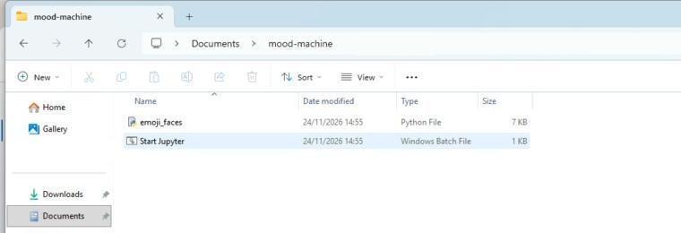
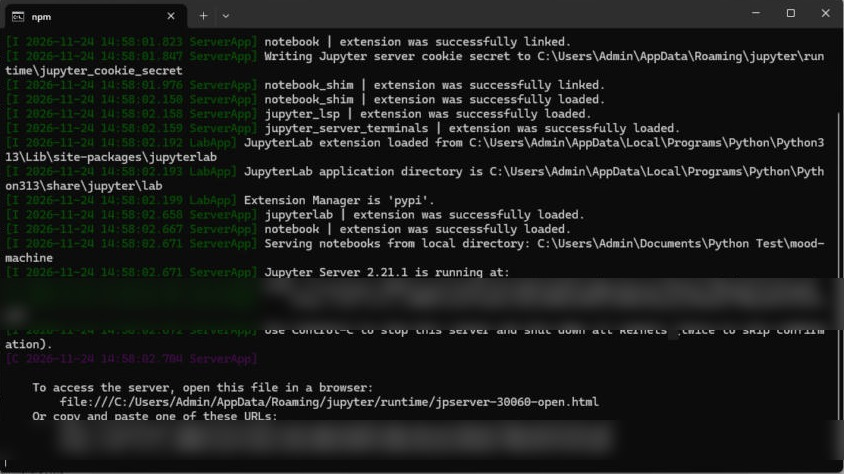
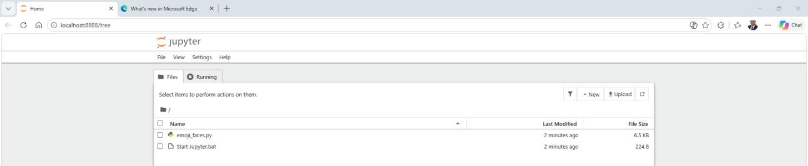
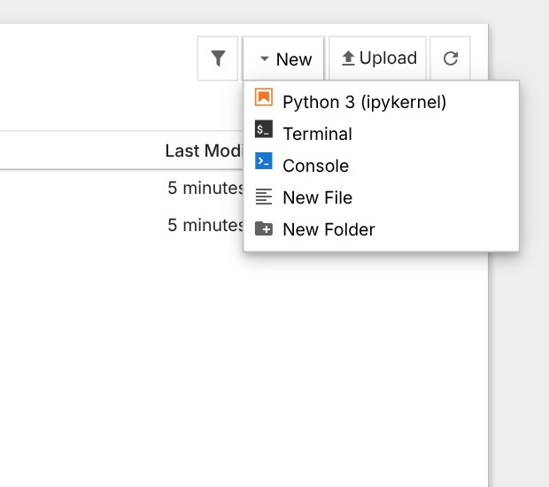
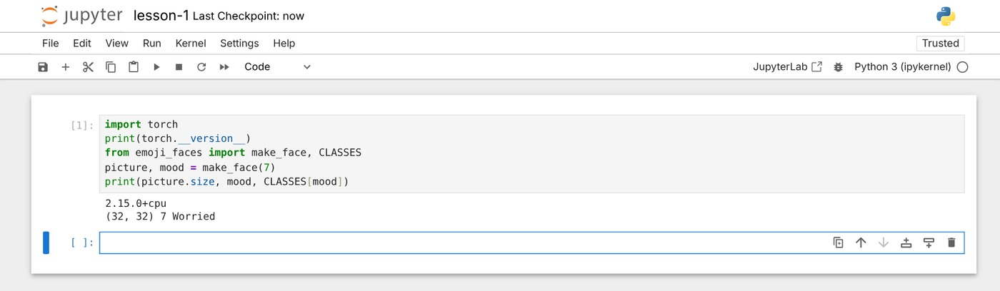
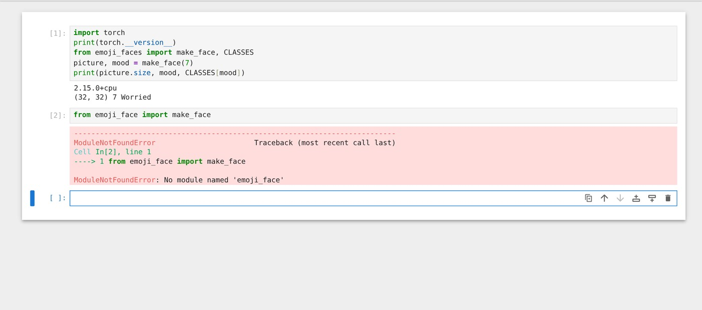

1. Set Up Your Folder
All your work for the unit lives in one folder. You only do this once.
- Open File Explorer and go to Documents.
- Make a new folder called mood-machine (New, then Folder).
- Download these two files and move them into that folder. They are also in the class Team's Files.
emoji_faces.py draws the faces. Start Jupyter starts Jupyter for you. Windows may hide the ".bat" and ".py" endings, so the files can appear as just emoji_faces and Start Jupyter.

2. Start Jupyter
Do this at the start of every lesson. In your mood-machine folder, double-click Start Jupyter.
A black window opens and fills with text. This is Jupyter running. Leave it open for the whole lesson: if you close it, Jupyter stops and your code won't run. You can minimise it.

After a few seconds your browser opens a page called Jupyter showing the files in your folder. The address starts localhost:8888, which means the page comes from your own computer, not the internet.

If the browser doesn't open, look near the bottom of the black window for a line starting http://localhost:8888/tree?token=. Copy the whole line into your browser's address bar.
If the black window closes straight away, or Windows shows a warning instead of the black window, tell your teacher.
3. Open Today's Notebook
A notebook is a file that holds your code and what it printed. Each session has a starter notebook with the code and tasks for that lesson.
- Download the starter notebook from the top of the session's page and move it into your mood-machine folder.
- On the Jupyter page, click the notebook's name to open it. It opens in a new tab.
You can also make a blank notebook: click New (top right), then Python 3 (ipykernel). Click the word Untitled at the top to rename it. Type over the highlighted word only and keep .ipynb on the end, or Jupyter won't know the file is a notebook.

4. Run Code
Code goes in the grey boxes, called cells. Click a cell, then press Shift + Enter to run it. The output appears underneath and Jupyter moves to the next cell.
Test that everything works by running this in any cell:
import torch
print(torch.__version__)
from emoji_faces import make_face, CLASSES
picture, mood = make_face(7)
print(picture.size, mood, CLASSES[mood])
You should see a version number starting with 2, then (32, 32) 7 Worried.

The number in square brackets to the left of a cell, such as [1], counts the cells in the order you ran them. While a cell is running it shows [*]: wait for it to change to a number before running the next one.
5. When You See a Red Box
A red box under a cell is an error message. Read the last line first: it names the problem. Here the file name was mistyped as emoji_face instead of emoji_faces, so Python couldn't find it.

Fix the code in the cell, then press Shift + Enter again. Errors are normal, and reading them is part of programming.
| Last line of the error | What it usually means |
|---|---|
No module named 'emoji_faces' |
emoji_faces.py isn't in your mood-machine folder, or the name is misspelt |
NameError: name '...' is not defined |
You used a name before making it. Run the earlier cells first |
SyntaxError |
A typing slip: a missing bracket, colon or quotation mark |
IndentationError |
The spaces at the start of a line don't line up |
TypeError mentioning ellipsis |
You left a ... in a YOUR TURN cell. Replace it with your answer |
6. Save and Stop
At the end of a lesson:
- Press Ctrl + S to save the notebook.
- Close the notebook tab and the Jupyter tab in your browser.
- Close the black window. That stops Jupyter.
Next lesson: double-click Start Jupyter again. If you want to go back to an old notebook, open it and choose Run, then Run All Cells. Python forgets everything when Jupyter stops, so this runs your code again.